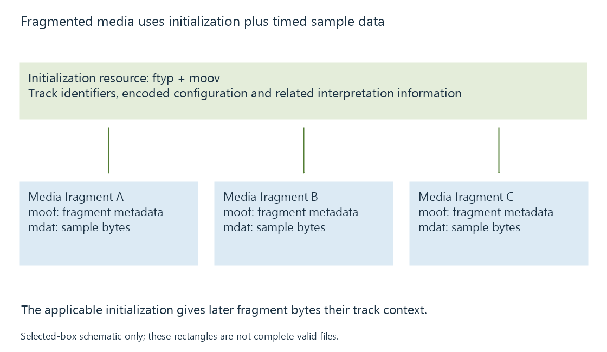

HLS media segments and initialization
HLS media segments carry timed media intervals whose packaging, initialization and decoding dependencies determine how a player can enter and assemble the stream.
An HLS media segment carries a described interval of the presentation. The media playlist identifies it and gives its duration. The player retrieves its bytes, interprets their packaging and uses the samples on the intended timeline.
A segment's filename does not identify the video codec or prove that the media is self-contained.
Two packaging arrangements
HLS supports specified media-segment formats. Two common video arrangements are MPEG-2 Transport Stream and fragmented MP4.
| Arrangement | Where important interpretation information appears |
|---|---|
| Transport Stream | Transport-stream structure, programme information and encoded-stream configuration |
| Fragmented MP4 | Initialization track descriptions plus media-fragment timing and sample data |
A .ts segment can carry encoded video and audio within transport-stream packets. “TS” names the container arrangement rather than H.264, HEVC or another video encoding.
For fragmented MP4, a schematic relationship is:
Initialization: ftyp + moov (track and sample descriptions)
Media: moof (fragment metadata) + mdat (sample bytes)
This is a selected-box sketch, not a complete valid file. The ISO BMFF byte-stream reference and HLS specification define additional structure and constraints.

The HLS EXT-X-MAP tag names the applicable initialization resource. Downloading a later media fragment does not replace the need to know how its track identifiers and encoded configuration should be interpreted.
Independent entry is a stronger property
A segment boundary is a delivery boundary. A suitable video random-access point is a decoding property.
If pictures near a boundary depend on earlier pictures, the player may need prior encoded data or start at another suitable access point. A publisher advertising EXT-X-INDEPENDENT-SEGMENTS asserts that the segments satisfy the protocol's independence requirement. It cannot create independence simply by adding the tag to an arbitrary split.
This distinction explains why packaging and encoding are often coordinated. Segment boundaries intended for quality switching or seeking need appropriate timing and decoding relationships. Video keyframes explains the underlying access-point concepts.
Splitting does not require another encode
A delivery job can package copied encoded video into segments while preserving its picture representation. That is compatible with an Emby Direct Stream session.
Alternatively, a converter can generate a new representation and package its output in the same delivery format. The resulting resource names can look similar in both cases.
The evidence of copying or encoding lies in the stream operations, not in a .m4s or .ts suffix.
Media duration and byte size vary independently
A segment lasting four seconds can be much larger than its neighbor of the same duration. Scene complexity and encoding decisions determine payload size. The playlist duration helps establish the timeline; actual byte arrival helps determine whether the next interval is available in time.
Separate video, audio and text resources can also have different interval boundaries. A subtitle cue may span a video-segment boundary, while an audio stream uses its own sample cadence. The player assembles their presentation relationships rather than requiring all resources to be identical little files.
When track configuration or timing changes, discontinuity handling supplies the boundary context needed to continue interpreting later media.
See Also
- HLS playlists: variants, media order and live windows
- Common Media Application Format (CMAF)
- Stream copying and encoded packet handling
- Seeking during streaming
- Video Keyframes and Random Access
- Stream discontinuities and timeline changes